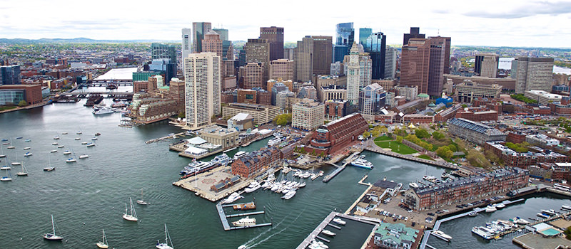
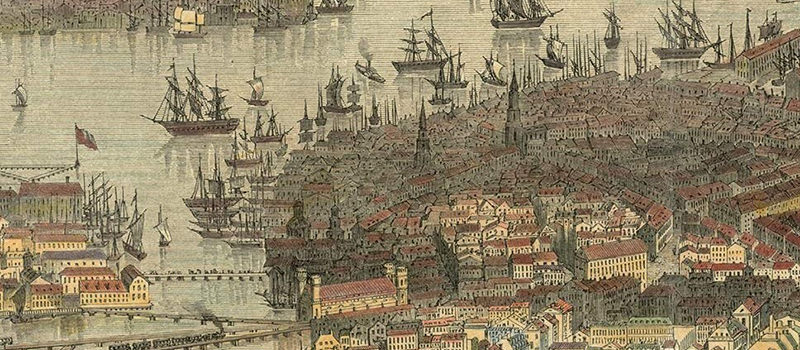
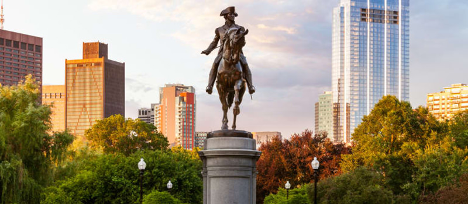
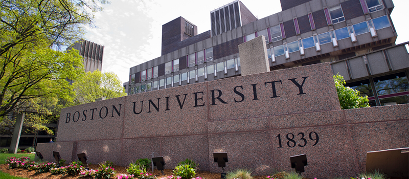

The Massachusetts State House, also known as the Massachusetts Statehouse or the New State House, is the state capitol and seat of government for the Commonwealth of Massachusetts, located in the Beacon Hill neighborhood of Boston.

Boston Harbor is a natural harbor and estuary of Massachusetts Bay, and is located adjacent to the city of Boston, Massachusetts.

The history of Boston plays a central role in American history. In 1630, Puritan colonists from England founded Boston, which quickly became the political, commercial, financial, religious and educational center of the New England region.

Paul Revere was an American silversmith, engraver, early industrialist, Sons of Liberty member and Patriot in the American Revolution.

Boston University is a private research university in Boston, Massachusetts. The university is nonsectarian, but has a historical affiliation with the United Methodist Church. It was founded in 1839 by Methodists with its original campus in Newbury, Vermont, before moving to Boston in 1867.